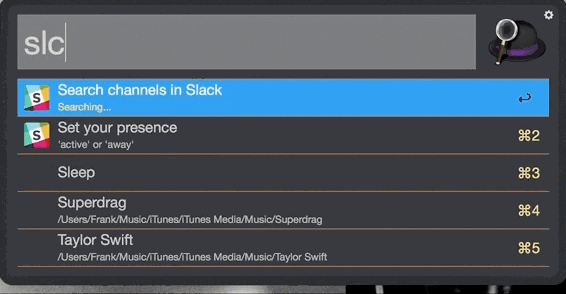

Typical Appearance
Task Launchers frequently appear as a dock at one of the edges of the screen (in accordance with Fitts' Law), often in the form of unlabeled images. Task Launchers also frequently include a text field, or search box.
Typical Behavior
Generally implemented as a graphical menu of sorts, the task launcher's primary goal is to allow the user to initiate tasks, most frequently, by launching applications. The secondary goal is to improve the speed in which the user is able to perform such tasks. Task launchers are made to increase efficiency and boost the user's satisfaction. Another goal of task launchers is to improve the learnability of a given operating system. The task launcher, depending on the type may have built in search capabilities that enhance and improve the learnability of the entire system.
State Diagram
Below is a generalized state diagram that applies to most task-launchers. It is by no means exhaustive, only illuminating the broad strokes of task launching

Events
During the use of a task launcher, the user is required to click on the image of a desired file or application. Once the text input is received the task launcher performs one of three actions:
1. Opens the desired file
2. Launches the application
3. Responds with a message that states "file/application not found"
Component in Action
Ubuntu 12.04
The following video demonstrates the use of the Ubuntu task launcher at 00:19.
As you can see in the clip, the dock on the left side of the screen launches applications. The first launch is completed by clicking one of the icons, in this instance Google Chrome. The second launch of an application utilizes the secondary launcher, which includes a list of recently launched apps, as well as a search bar for textual input. The Ubuntu task launcheer mirrors Windows 10 in the use of the Operating System logo to open another task launcher.
Variants
Some task launchers are a search box, which take a text input, that give either a text response or a task response (i.e. the launching of an application). Others have their own windows and act as applications. Generally, third-party task launchers are more likely to open separate windows than native task launchers. A task launcher's capabilities are susceptible to change as well. Some third-party launchers support workflows as well as web searches and password storage.

Priority Metrics
Satisfaction
The Satisfaction of the user is critical to the task launcher's success. An operating system with a slow task launcher will not be very successful. The user is the most important part of the OS and if the user is unhappy, they may just switch operating systems.
Efficiency & Learnability
The efficiency and learnability of a task launcher are the most relevant metrics to the satisfaction of the user. The efficiency ensures that the users needs are met as quickly as possible. The learnability ensures that any user can use the task launcher and understand its uses and capabilities and that the user can have initial interactions with the computer itself.
Memorability & Errors
Memorability and errors are not very relevant to the overall usability of a task launcher. The opportunity for errors is minimal, while the necessity for memorability is almost nonexistent given that task launchers are used almost every time a computer is used.
Key Characteristics
Good task launchers are fast and easy to use. The best task launchers are intuitive. You tell it what you want to do and it initiates the task. These goals make it clear that the learnability (intuitiveness) and efficiency (speed and ease of use) of a task launcher determine its success. The overall usability of a task launcher should be one of the best across all applications in an operating system. The task launcher is an integral part of portraying the mental model of the computer architecture to the user. It is the starting point for any modern human computer interface.


{kind=link}